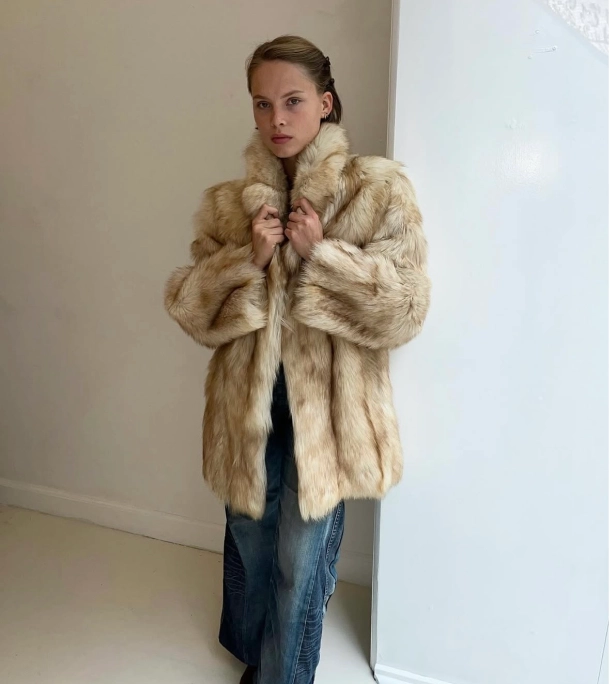
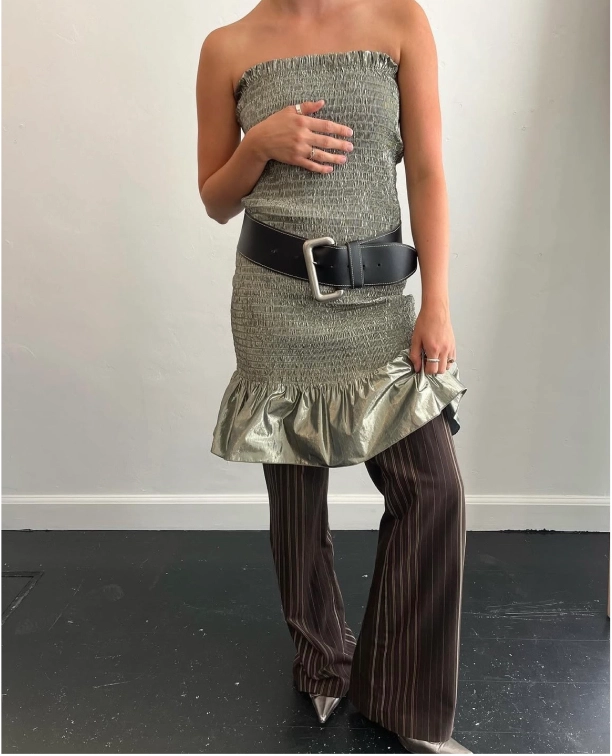
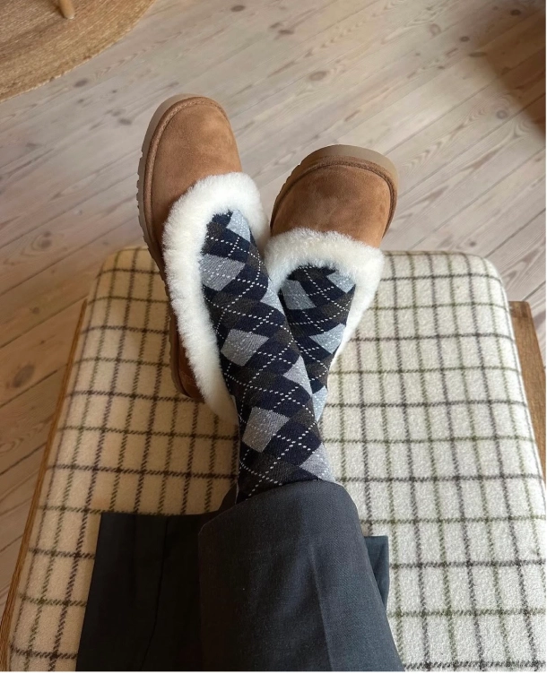
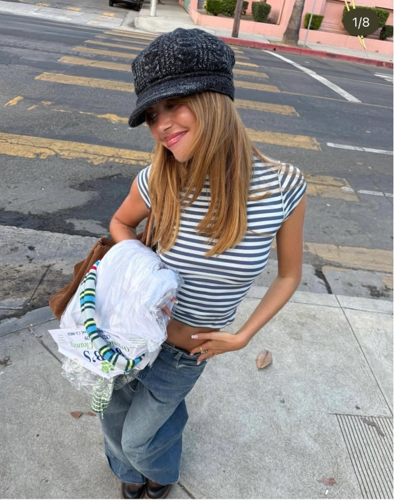
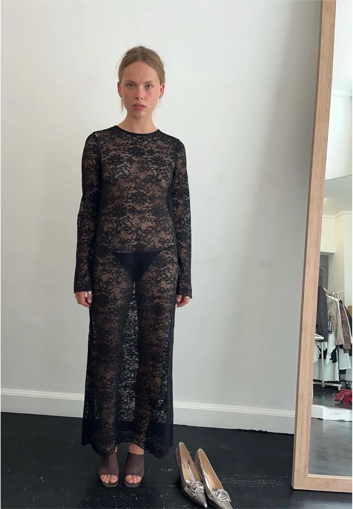

VINTAGE KØBENHAVN
I takt med at tiden ændrer sig, gør moden det også. Vores stil er en stor del af vores identitet, og flere modeikoner er begyndt at dykke op. Mange finder inspiration i tidligere trends og kombinerer det med moderne stil.

Pelsjakker

Kjole over bukser

Mønstre med tern

Baker boy hat

Lag på lag
